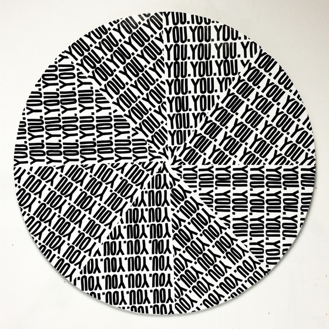

Q&A : TONIA CALDERON
LA based artist Tonia Calderon has traveled overseas, made murals around Los Angeles, launched a small clothing and accessory brand, and commissioned many pieces for some of the biggest names in the music industry through her art. Getting fired from her bartending gig was probably the second best thing that ever happened to her. The first would probably be ditching a business degree and picking up a paintbrush in college and never looking back.
She has been a full time artist for six years with her recognizable font and style of black and white text based art that combines repetitious words, phrases, and symbols. She is also widely known for her large scale portraits of musicians, leaders, and figures juxtaposed with lyrics, poems and powerful speeches, which was her claim to fame in the art world. It all started with a love for Tupac, music, and a quest to find herself and her voice through art.

AMFM: How long have you been making work and doing this style that you seem to have at the moment?
TONIA CALDERON: I’ve been professionally painting for about seven or eight years now, and I started off doing portraits of musicians with the lyrics throughout. I’ve always loved music and lyrics, and wanted that to be a part of my art. In the past four years, I’ve kind of transitioned. I always thought I had to stick with a brand, and then I wanted to involve myself more. I came up with the series Parallel lines, all black and white art and symbols, and with the symbols I found I can kind of put them together and tell stories. I think that’s really what was missing, I was kind of getting stuck in the motions of always doing pieces of musicians, which I love, but then you get into commission work and you start doing a lot that has nothing to do with you personally at all as an artist. I’ve been just trying to have fun.AMFM: Why did you choose certain figures in the beginning when you were doing portraiture and the singers?
CALDERON: It mostly had to do with the lyrics really, and music in general. I grew up listening to everything. I was listening to rap when I was very little and I loved earth wind and fire and everything else in between. I loved tupac. When I first started painting I actually did like only tupac paintings for a while, and then I got into everyone. I was going through a phase haha. I’ve done a lot of work for musicians, and the music industry. Word of mouth, and then people hit me up wanting the lyric portraits.AMFM: What’s your most memorable piece or the one that has meant the most to you?
CALDERON: Personally I love this piece I did of one of my favorite poems, “Howl” by Allen Ginsberg, and I love my William Shakespeare piece. And most memorable? Most memorable story wise was when I did a portrait for Dr. Dre, and when I got to paint a piano for Alicia Keys. I messed up the lyrics on Dr. Dre’s lyrics and had to fix it. It was from an unreleased song he wanted to put on “Detox,” so he recorded it on a tape recorder and that’s all I had to listen to to make sure I was getting the lyrics right. I thought he was saying “I drank topless,” in the chorus and like it’s repeated through the whole thing, and he was reading the painting in front of a big group of people all excited, and then he stopped reading and was like “I drank topless?” He was like it’s “I dream topless,” and I was like “that makes way more sense, but it really sounds like you said drank, but I can fix it!” He was like “Are you sure?” I was like “I’m a perfectionist.”AMFM: What drew you to typography? And wanting to do work with words? Do you have background in writing?
CALDERON: It just all started with me wanting to put myself in my work. A lot of people took a big notice to my font, and that wasn't even really my intention. I was just doing something, writing stuff I liked, and having the symbols, and I just saw people recognizing the font over and over again, but I wasn’t trying to make a font. I don’t have a background in writing. I have a twin sister, she’s a poet, and she studied poetry in college. I think because she’s such an amazing writer I always thought I wasn’t that good, but then when I write certain little phrases everyone’s catching on to them so I guess I have some type of writing ability!AMFM: Have you guys ever done anything together where she’ll supply the words?
CALDERON: That’s what we’re working on right now! Doing a poetry book - she’s doing the poems, and I’m doing all the artwork for it and it going to be called “You.”
AMFM: You also have work with the motif of the literal word”you” over and over? Is your way of inserting yourself into your work or does it mean something?CALDERON: So it’s actually the opposite for me. It’s supposed to be the repetition of the thought of someone else. So it’s just the thought of you on repeat, “you” being the one you’re in love with you know. AMFM: Were you making art as a young child?
AMFM: Were you making art as a young child?
CALDERON: I always did art when I was younger and I was always known as the best artist as the class, but it never really went past that. As a young child I was creative, but never did anything with it. When I started college, I was doing business I knew I wanted to do something creative because I loved it, but I didn’t know what. I started painting in college.
AMFM: So how do you pick your characters or symbols?CALDERON: Three X's can be used to use as a symbol of love. Either a text message, or a note, I would always end it with three xxx's. I have a tic tac toe board with one X that to me symbolizes the start of something, the beginning of a relationship, or a story. When it’s the nine X's, that’s like the total win. If you’re playing tic tac toe, it’s the impossible win - It’s perfect. I often say I use x's on everyone’s faces personally as a double meaning of everybody being equal. The lines are like two people in perfect direction together.
AMFM: What have you learned about yourself through creating art?
CALDERON: I think it’s more learning me in general. In my family, I saw so many different dimensions of life. My family went to being very wealthy, to poor, to middle class. I saw every aspect of life possible when I was younger which helped mold me. By the end of it I hope these stories and symbols will all come together at one point. I’ve learned I like to be by myself more than I realized. I think if I could just create I’d be perfectly happy. XXX
FOR MORE FROM TONIA CALDERON:
WEBSITE / INSTAGRAM